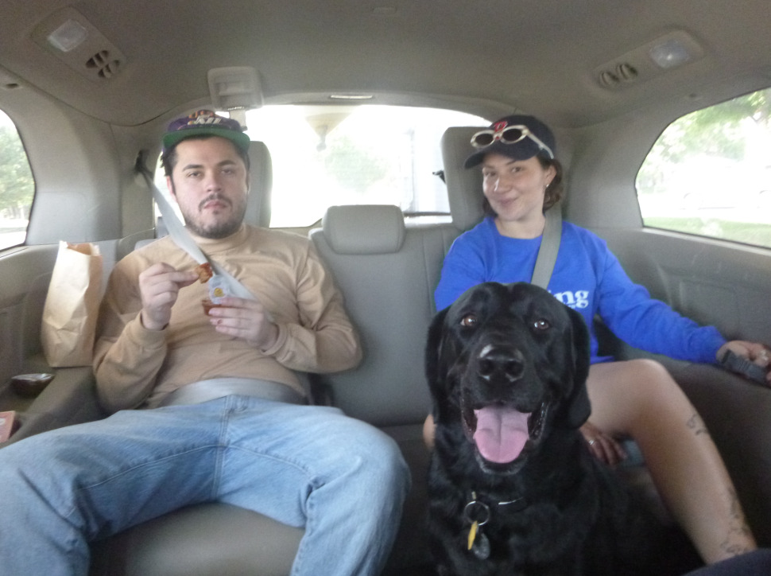
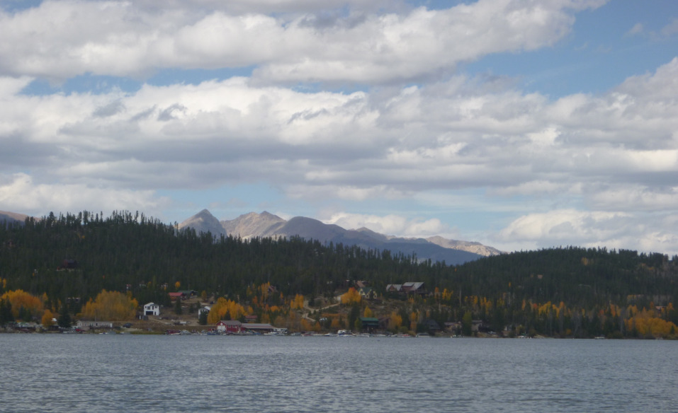
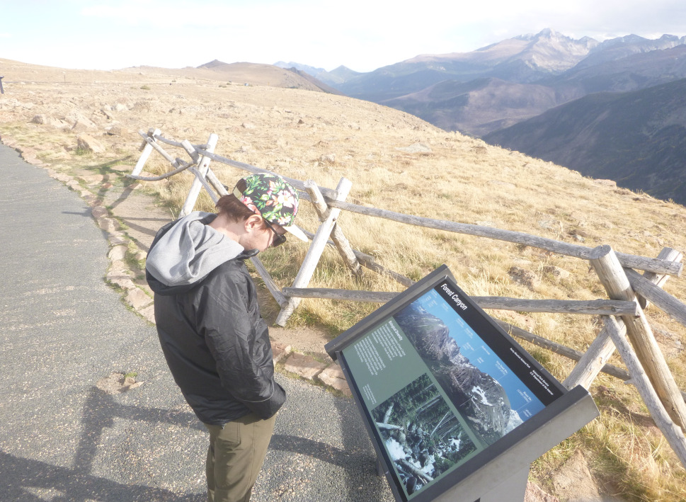
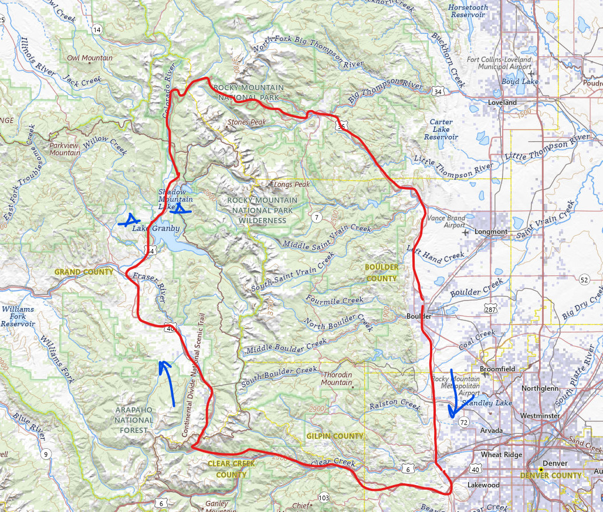

Location: Granby and Grand Lake, CO Type of trip: Campground Date: Sept. 29 - Oct. 1, 2023 People: Jack Glynn, Andy Sagers, Emily
The last weekend in September 2023 I flew out to Colorado to see my old friends and college senior project teammates, Andy and Jack.
We planned to go on a camping trip in the mountains outside of Denver and Boulder for two nights. So, we took Jack’s family minivan and canoe,
and hit the road with the addition of Andy’s girlfriend Emily and dog Otis.
Our first stop was Berthoud Pass at 11,307 ft of elevation, a road elevation that demolishes anything in California. Ahead of the trip I
purchased some Northern Colorado hiking guidebooks and scouted some nice hikes out of Berthoud. My plans were quickly foiled when Jack
proclaimed he was not much of a hiker. I made it my goal to bring this up as much as possible for the rest of the trip.
We traveled onward and over the mountains. The drive was amazing and fall colors were unmatched. In the town of Granby we stopped at the local
fishing tackle shop to pick up some gear and fishing licenses. As Andy purchased his first ever fishing rod, the store clerk insisted we jig
for lake trout off our canoe instead of “just tossing lures around”. Stillwater campground on Granby Lake was our destination for the night.
The next day we drove into Grand Lake to resupply and find camp. I insisted we did not need to stay at an established campground and could
instead boondock. The idea was disregarded and we opted to stay at Green Creek Campground. I took some heat as we found an awesome spot
right on Shadow Mountain Lake. We canoed and fished around for the whole afternoon. Sunset was spent fishing the Colorado River below the lake.
Brook trout torpedo out of the water but did not want anything to do with our lures.
We finally caught a nice brown trout while canoeing the next morning. The last leg of our trip was a drive through Rocky Mountain National Park.
We stopped at the visitors center and a couple spectacular pull offs. Dinner and beers at Oscar Blues Brewery rounded off the fantastic Colorado camping trip.

Otis keeping the kids in check

Fall colors on Shadow Mountain Lake

Jack viewing an informational display in Rocky Mountain National Park. Longs peak in the background.

USGS map (Date posted: 2024-05-19)